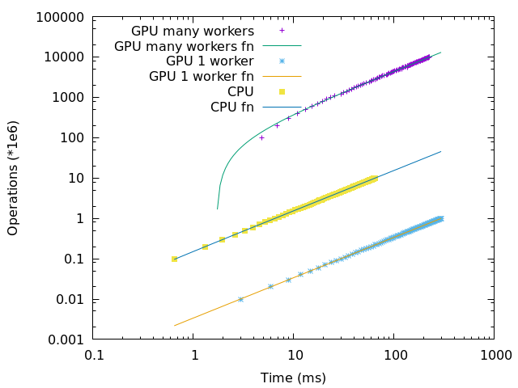

AMD RX 480 GPU OpenCL benchmark
This post summarizes the results of my AMD GPU benchmark code to benchmark the computing power of an AMD Radeon RX 480 GPU against an Intel Core i5-7400 CPU.
The benchmarking code I am running on is the following code:
__kernel void kerntest(__global char* data, int loops_cnt) {
size_t id = get_global_id(0);
int tmp = data[id] - 32;
for (int i=0; i<loops_cnt; i++) {
tmp = (2*tmp + id) % 95;
}
data[id] = (char)(tmp + 32);
};
The operation we will be counting is the one in the loop:
tmp = (2*tmp + id) % 95;
The following graph has been generated by gnuplot:

It displays on a loglog scale the number of operations performed during a given period for:
- a single CPU
- a single GPU worker
- many GPU workers (from 10,000 to 1 Million)
Each dot corresponds to a sample, i.e the number of operations performed during the corresponding period. Each line is the linear approximation of the corresponding points.
A couple of statistics are printed by gnuplot:
-= Millions operations per second =-
CPU: 152
GPU 1 worker: 3
GPU many workers: 44045
-= Ratios =-
CPU / GPU 1 worker: 45
GPU many workers / CPU: 287
GPU many workers / GPU 1 worker: 13081
This means that in 1 second:
- The CPU performed 152 Millions operations.
- The GPU using 1 worker performed 3 Millions operations.
- The GPU using many workers performed 44 Billions operations.
We also computed of couple of ratios, to compare these different results:
- The CPU performs 45 times more operations than a single GPU worker.
- The GPU with many workers performs 287 times more operations.
- the GPU with many workers performs 13081 times more operations than when using only 1 worker on the same GPU.